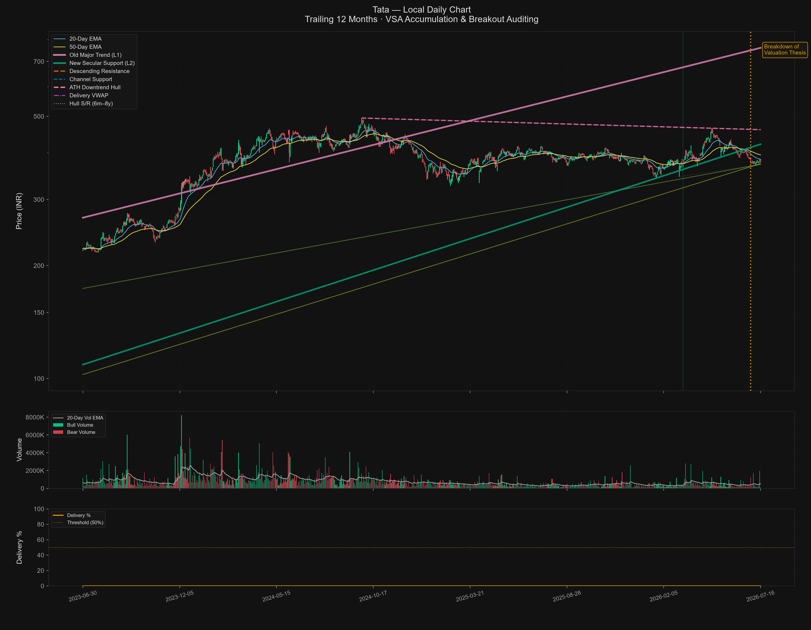

Equity research that shows its work.
Attest is a research layer for Indian equities. Deterministic code does the math. AI interprets the qualitative. A validator gates every number before it reaches a conclusion — so every claim is one you can trace, and defend.
Watch the research engine think.
A scattered morning of research resolves itself into a single auditable brief. Deterministic code owns the math; a validator gates every figure; AI only interprets the qualitative — and shows its work.
- 01Research complexityScattered sources, no synthesis.
- 02Source documents emergeFilings, price, news, shareholding — gathered.
- 03Validation activatesEvery figure passes a deterministic gate.
- 04Evidence accumulatesFeatures derived in code, not by the model.
- 05Confidence risesCross-referenced; gaps surfaced as N/A.
- 06Brief assemblesA verified research brief, traceable to source.
One boundary makes the whole system honest.
The deterministic-vs-interpretational boundary is the doctrine competitors don’t have. It decides what the model is allowed to do — and what it is forbidden to do.
01 · Deterministic core
Code owns the math.
Valuation, ratios, features and temporal isolation are computed in code — never delegated to a model.
No AI in the arithmetic
02 · Interpretational AI
AI interprets, never asserts.
The model synthesises unstructured text and qualitative reasoning — only where no closed-form rule exists.
Two-call protocol
03 · The validator gate
Every AI number is checked.
AI output must pass deterministic validator gates before it enters any signal. AI is a source; the validator is the gatekeeper.
AI is a source, not the verdict
Don’t take our word for it. Read the system’s own output.
This is the actual market brief the Attest pipeline produced for Tata Power on 16 July 2026 — not a mock. The technical read is real and deterministic. The gaps are real too, and we leave them visible.

The 20-point brief · deterministic
This is what the system produces today. The technical read is real and deterministic. The institutional and macro dimensions are emitted as N/A, because the data was not available and the doctrine forbids inventing it. Intrinsic valuation (DCF, EBO, DDM) is still being built — so rather than fabricate a fair value, the verdict degrades honestly. An honest limited verdict beats a fabricated complete one.
We show you what’s built, what’s in progress, and what isn’t.
No fabricated logos. No invented metrics. No security badges we haven’t earned. The roadmap below is the engineer’s honest contract with the future — drawn from our own gap inventory.
Request a demo
Data acquisitionBusiness Standard · Tijori Finance · NSE · MCA
Built
Institutional chartingPivot-extrema · OLS-rejected trendlines · VSA audit
Built
20-point market briefDeterministic · honest N/A discipline
Built
106-sector matrixNSMIM 6-layer · SRIM 5-phase playbooks
Built
Intrinsic valuationDCF · EBO · DDM · multiples · sum-of-parts
In progress
Signal synthesisBUY / SELL / HOLD · conviction · confidence band
In progress
Trade plan · backend · auth · APISizing · SSO · multi-tenancy · REST
Planned
See the work before you trust the verdict.
We’ll walk you through the doctrine, a real worked example, and the honest roadmap — including exactly what isn’t built yet. No aggressive funnel, no fabricated proof.
Request a demoPrivate beta · NSE / BSE · Built on a no-fabrication doctrine